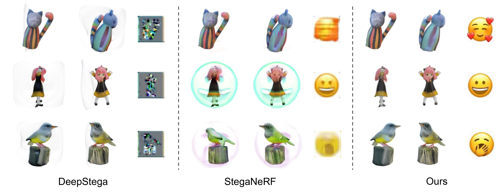
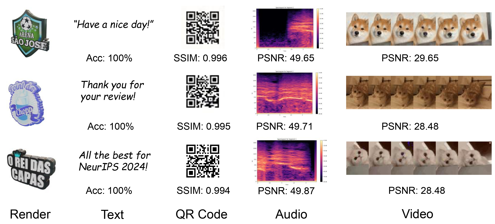

Abstract
Recent advancements in large generative models and real-time neural rendering using point-based techniques pave the way for a future of widespread visual data distribution through sharing synthesized 3D assets.
However, while standardized methods for embedding proprietary or copyright information, either overtly or subtly, exist for conventional visual content such as images and videos, this issue remains unexplored for emerging generative 3D formats like Gaussian Splatting.
We present GaussianStego, a method for embedding steganographic information in the rendering of generated 3D assets. Our approach employs an optimization framework that enables the accurate extraction of hidden information from images rendered using Gaussian assets derived from large models, while maintaining their original visual quality.
We conduct preliminary evaluations of our method across several potential deployment scenarios and discuss issues identified through analysis. GaussianStego represents an initial exploration into the novel challenge of embedding customizable, imperceptible, and recoverable information within the renders produced by current 3D generative models, while ensuring minimal impact on the rendered content's quality.
Framework

Overview of GaussianStego: During (a) Hidden Information Embedding, GaussianStego incorporates the DINOv2 features of the hidden information into the intermediate feature of Gaussian generation via cross-attention. In (b) Hidden Information Recovery, a U-Net-based decoder is employed to retrieve the hidden information from the rendered image under the checking pose. T hrough the optimization process, (c) Adaptive Gradient Harmonization is utilized to maintain a balance between the rendering and hidden recovery.
Experiments
Results of in-domin objects

Results of in-the-wild objects
Results of embedding multimodal information
BibTeX
@article{li2024gaussianstego,
author = {Chenxin Li and Hengyu Liu and Zhiwen Fan and Wuyang Li and Yifan Liu and Panwang Pan and Yixuan Yuan},
title = {GaussianStego: Embedding Invisible Information within Generative 3D Gaussian Splattings},
journal = {arXiv preprint},
year = {2024},
}